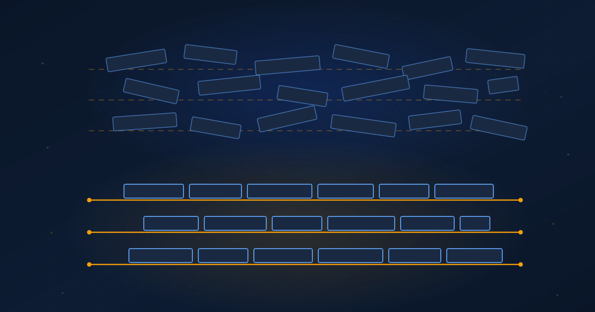

Freeze Three Constraints First
Agents will renegotiate your architecture to ship a feature unless something in the build fails when they do.
Ibrahim AbuAlhaol, PhD, P.Eng., SMIEEE
AI Technical Lead
An unclear requirement used to cost you once. Someone built the wrong thing, review caught it, the fix was cheap, and the misunderstanding was then resolved permanently in code that a person had read. You paid for the ambiguity a single time.
That accounting has stopped working. When a coding agent regenerates a module, it re-reads the requirement and re-resolves the ambiguity from nothing, and no mechanism forces it to resolve that ambiguity the same way twice. Birgitta Böckeler found exactly this while testing the Tessl framework in October 2025: identical specifications produced different output across repeated runs. What used to be a one-time tax is now charged per generation, and teams running agents generate constantly.
This is why specification engineering hardened into a discipline in 2026 instead of staying a slogan. Writing things down did not suddenly become virtuous. The cost structure inverted. Implementation fell toward zero, and ambiguity started to compound.
A specification is not a faster way to say what you want. It is the only place where a decision gets made once instead of once per run.
The half of the spec that nobody writes
Most specifications written for agents describe behavior: what the feature does, what the user sees, which edge cases matter. Tooling handles this part well. AWS Kiro runs a requirements-to-design-to-tasks flow across three markdown files. GitHub Spec Kit gives you specify, plan, and tasks.
Kiro also pulled EARS notation into the loop, a constrained requirements grammar that Alistair Mavin and colleagues published in 2009 after analyzing jet engine control requirements at Rolls-Royce. They found eight recurring defects in ordinary prose requirements, running from ambiguity through to untestability, and cut all eight by forcing every requirement into one of five sentence patterns. Airbus, NASA and Bosch adopted it long before agents existed.
But behavior is only the efficacy half of a specification. Efficacy is whether the system does the right thing, and acceptance criteria are how you buy it. Behavior says nothing about what has to stay true while forty other features are generated alongside it.
The other half is structural: the boundary that may not be crossed, the data that may not leave a region, the interface three other teams already build against, the failure that must degrade instead of cascade. David Parnas argued in 1972 that a module should be defined by the decision it hides rather than by the steps it performs. A module's real specification is what it refuses to expose.
Write only the behavioral half and you get working features sitting on a system that has to be rebuilt before it can carry production traffic. That is the efficiency half, where efficiency means how little you rebuild on the way to production. It never appears in a demo.
Architecture is the part of the spec you freeze
Here is a definition worth adopting. Architecture is the subset of the specification that nobody may renegotiate to ship a feature.
That subset used to be protected by economics. Rewriting the persistence layer to add a form field was too expensive to propose, so nobody proposed it. The constraint held because violating it was slow, not because anyone had written it down.
Agents removed the protection. Ask one to add a field and it will restructure the schema if that is the shortest path to a green test run, and the diff will look reasonable on review. Nothing in the request said the schema was load bearing, because nobody had ever needed to say so. The cost of violating an architectural decision fell to roughly the cost of any other change, so the decision quietly stopped being architectural while everyone kept treating it as settled.
Fred Brooks separated essential from accidental complexity in 1987 and argued that no single advance would deliver an order of magnitude on the essential part. Agents are the strongest attack on accidental complexity anyone has shipped. They do nothing about the essential part, which is deciding what a system must be and must not become. That work moved. It did not disappear, and specification engineering is where it landed.
Why most spec tooling stops short of production
Böckeler's survey gave the field its vocabulary by separating three levels. In spec-first, a spec is written before the task and effectively discarded once the feature ships. In spec-anchored, the spec survives and governs how that feature evolves. In spec-as-source, humans edit only the spec and never touch generated code.
Her finding is uncomfortable. Almost everything shipping today is spec-first while marketing itself higher. Spec Kit creates a branch for every spec, which ties a spec's lifespan to a change request rather than to the feature it describes. Kiro's own examples target a single story with no guidance on reuse. Only Tessl, then in private beta, aspired past the first rung.
Production systems live in exactly that gap. A spec discarded after the first generation cannot govern the second. Hartwig Grabowski named the resulting failure silent spec-code drift: code evolves, the specification does not, and the divergence stays invisible until repair is expensive. His proposed fix is a drift gate that turns divergence into a blocking merge condition, structurally the same move as a fitness function in evolutionary architecture. An automated check fails the build when a stated property stops holding.
One caution before anyone builds a business case. The first-pass success multipliers circulating for spec-driven tooling come from vendors and early adopters, not controlled studies, and Grabowski's paper carries no benchmarks at all. The argument does not rest on those numbers. It rests on the cost structure, which you can check against your own rework rate without anyone's marketing.
An unenforced specification is a comment. Enforcement is what turns a document into a contract, and only a contract survives contact with an agent that is optimizing to pass tests.
The three worth freezing first
A rule in a wiki is advice. The same rule in the test suite is a specification. Nobody has time to make an entire architecture executable in one pass, and you do not need to: three constraints cover most of what agents actually break, and each is checkable in a few lines.
- A data boundary: which records may not leave a region, a tenant, or a service. The check inspects what crosses the line and fails when something does. Write this one first, because it is the one with a regulator attached to it.
- A module dependency rule. Agents break this one constantly, because reaching across a boundary is usually the shortest path to a passing test.
- A degradation requirement: what the system does when a dependency is gone. Remove the dependency inside the test and assert that the system sheds load rather than cascades.
The second one looks like this.
# spec/invariants/test_boundaries.py
FORBIDDEN = {"billing": {"reporting", "marketing"}}
def test_module_boundaries():
for package, banned in FORBIDDEN.items():
for module in imports_of(package):
assert module.root not in banned, (
f"{package} imported {module.root}. "
"See spec/architecture.md, boundary B-04."
)
That test is now part of the specification. Every agent that runs the suite reads it, and it fails loudly instead of drifting quietly. It also points back to the prose, which is what lets a person decide whether the boundary was wrong rather than just deleting the assertion.
Three checks is an afternoon of work. After it, every generated change is measured against them before it merges, and the agent that would have quietly restructured your schema has to fail a build to do it. The number matters less than the principle: pick the constraints whose violation is most expensive to reverse, and make breaking them noisy.
Two more things cost almost nothing to add. Interface contracts need explicit versions, because they are promises other teams already build against. And name your non-goals, since the cheapest constraint you will ever write is the one that stops an agent from helpfully expanding scope.
Efficiency and efficacy are different purchases
Most organizations adopting spec-driven tooling have bought efficacy and assumed efficiency came with it. They see faster first drafts and conclude the method works. The bill for the other half arrives when a system has to survive its own rate of change rather than impress in a review: every feature works, and the fourth one required rewriting the first three.
Specification engineering is not documentation with better branding. It is deciding, once and in writing, which parts of a system may be regenerated and which may not. The parts that may not are your architecture whether or not anyone wrote them down. Writing them down is the only thing that makes them hold.
What leaders should do
- Ask your teams to show you the structural half of a spec, not the acceptance criteria. If the only artifact is a list of behaviors, your architecture is undocumented and every agent is free to redesign it. Assign an owner and a date.
- Give one engineer an afternoon this quarter to move the three constraints above into the test suite. That is the whole intervention, and it outlives whichever tool you adopt next.
- Find out which of the three levels your tooling actually operates at, rather than which one the vendor claims. If specs are created on a branch and merged away, you are at level 1 and your specs are scaffolding.
- Change what you measure. Track rework rate, meaning the share of generated code replaced within thirty days, next to throughput. Throughput on its own rewards the exact failure you are trying to prevent.
Related Articles
References & Extended Literature
- Böckeler, B. "Understanding Spec-Driven-Development: Kiro, spec-kit, and Tessl." Exploring Gen AI, martinfowler.com, 15 October 2025. martinfowler.com/articles/exploring-gen-ai/sdd-3-tools.html
- Grabowski, H. "The Spec Growth Engine: Spec-Anchored, Code-Coupled, Drift-Enforced Architecture for AI-Assisted Software Development." arXiv:2606.27045 [cs.SE], 25 June 2026. arxiv.org/abs/2606.27045
- Mavin, A., Wilkinson, P., Harwood, A., and Novak, M. "Easy Approach to Requirements Syntax (EARS)." 17th IEEE International Requirements Engineering Conference (RE 2009), pp. 317-322. DOI 10.1109/RE.2009.9
- Parnas, D. L. "On the Criteria To Be Used in Decomposing Systems into Modules." Communications of the ACM, 15(12), December 1972, pp. 1053-1058. DOI 10.1145/361598.361623
- Brooks, F. P. "No Silver Bullet: Essence and Accidents of Software Engineering." IEEE Computer, 20(4), April 1987, pp. 10-19. DOI 10.1109/MC.1987.1663532
- Ford, N., Parsons, R., and Kua, P. Building Evolutionary Architectures: Support Constant Change. O'Reilly Media, 2017. Source of the fitness function pattern referenced above.
- GitHub. "Spec Kit: Toolkit to help you get started with Spec-Driven Development." Open-sourced September 2025. github.com/github/spec-kit
- AWS. "Kiro: The AI IDE for prototype to production." Spec mode, EARS notation, and the requirements-to-design-to-tasks flow. kiro.dev